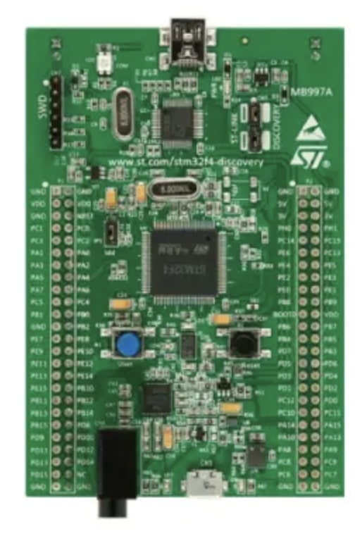

Hi, I'm Alex.
A Mechatronic Systems Engineer.
Welcome to my corner of the digital realm! I'm a recent Mechatronic Systems Engineering graduate from Simon Fraser University and I'm deeply fascinated by the world of embedded software, where hardware and software converge. My academic journey at Simon Fraser University equipped me with a robust foundation in applying mathematics to engineering and crafting intelligent systems. Throughout my education, I've honed a diverse skill set, spanning CAD design, System Modeling and Simulation, Thermodynamics, Embedded Software Design, Robotics, and Control Systems. These experiences have instilled in me the confidence to tackle complex challenges head-on. Explore my portfolio, and let's discuss the exciting possibilities at the intersection of innovation and transformation. Together, we can shape the future.
Projects
Dynamic Motion Interface for Game Control
Engineered firmware for an STM32 microcontroller to use the onboard accelerometer to control a python-based 2D desktop game involving shooting at balls. Developed SPI drivers for communication between the microcontroller and the accelerometer. Used timers and interrupts to stream sensor data to the game through USB.
- STM32F407VG
- C
- SPI
- GPIO
Design and Control of a Two-wheel Self-Balancing Robot

Designed and modeled a feedback control system for a two-wheel self-balancing robot using MATLAB, and Simulink. Analyzed the system dynamics, controllability, and observability using state-space methods resulting in stable balancing. Created a visual simulation of the robot using Simscape.
- MATLAB
- Simulink
- Simscape
- Feedback Control
- State-Space Modeling
Foot Wearable for Dystonia Pain Management - Capstone Project

Led the controls development of Lief - a novel device alleviating the pain and discomfort experienced by people with foot dystonia. Developed firmware responsible to control two coin-type vibration motors integrated into a foot wrap. Implemented vibration intensity control using pulse-width modulation (PWM), enhancing user comfort. Soldered vibration system on a protoboard, seamlessly integrating it with the overall device. Developed a simple graphical user interface to allow users track their device usage data.
- C
- Arduino
- Soldering
- Python
- PySide
Skills
- C
- C++
- Python
- Linux
- Solidworks
- Git
- ARM
- STM32
- I2C
- SPI
- UART
- GPIO
- Jira
- MATLAB
- Simulink
- Oscilloscope
- OOP